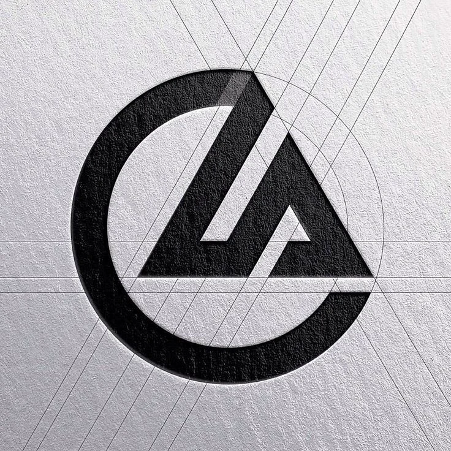

01 / NDA
A circle that cradles a triangle
Two founders, one practice, and a brief with no patience for decoration: bold, strong, no-nonsense. No taglines about "building dreams." They wanted a mark that looked load-bearing.
THE LOGIC
The practice is built on two initials — C and A. Rather than letter them side by side, I built the C as a structural ring that cradles the A, so the two founders read as one continuous form, not two names stapled together. The triangle does double duty: it's the A, and it's the universal sign for structural stability — the shape every roof truss and load path reduces to.
THE CONSTRUCTION
Nothing in this mark is freehand. The triangle's legs, the circle's radius, and the negative-space gap between them are all locked to a single repeating module — marked as x across the construction grid. That discipline is what lets the mark survive being engraved, embossed, or shrunk to a favicon without the joints going soft.